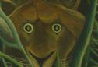
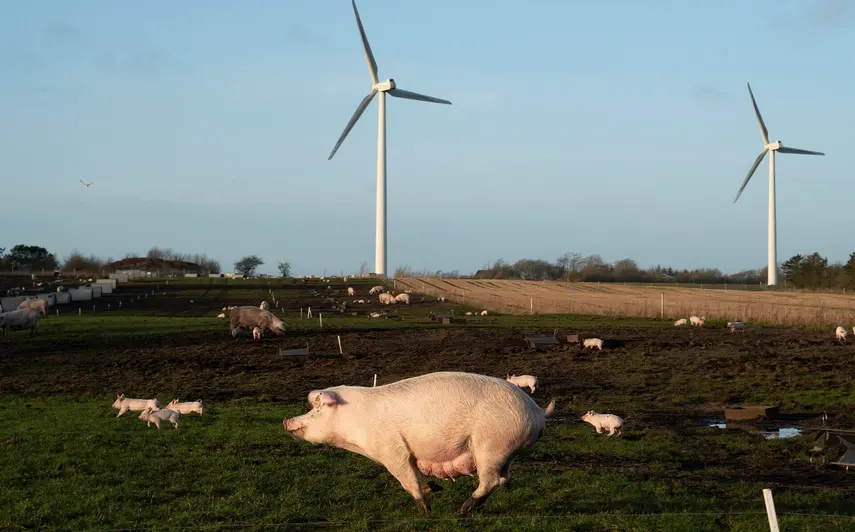
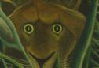
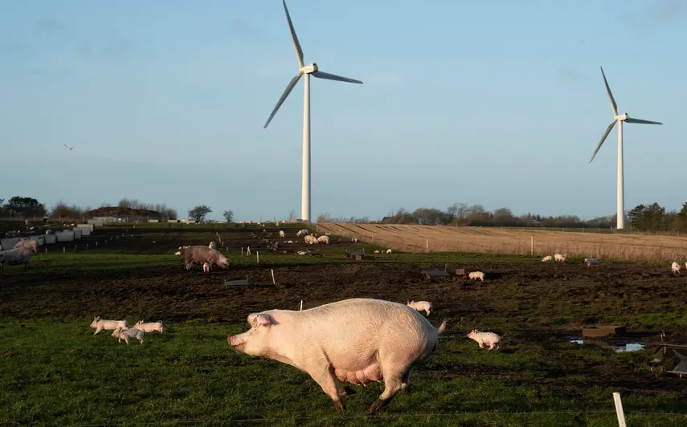

Design, music and web technology. I can help you build things, mostly on the internet. Tools that last, software you can change.
Contact me at oskar@rough.dk, Mastodon or Matrix.
Listen to my radio, one big list of songs I've enjoyed since 2013. You can create your own → Radio4000.com.
… and here are some of my projects:
A radio for the year 4000. A music player and radio service for your listening pleasure. Made with Internet4000. Check the source code.
A network between Danish designers, architects and creatives offering ideas, discourse, jobs and workspaces. Since 2007. Still active, but on life-support since ~2015 or so.
Slay the Web is a singleplayer, deck builder, roguelike card crawl game for the web based on Slay the Spire
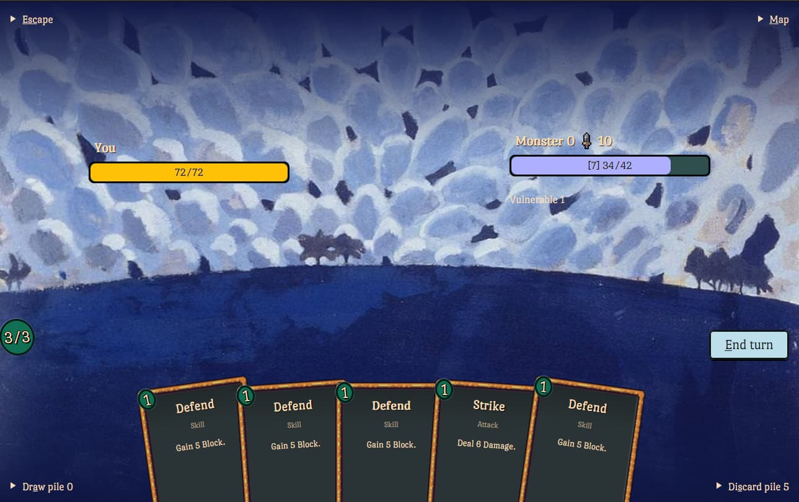Real recognize real. Hyper-stimulated downtime, a curated online video channel. Strrr fuses the ease of use of classic TV with the best of the internet. A platform where we had the pleasure of creating six seasons of interviews with so many good people.
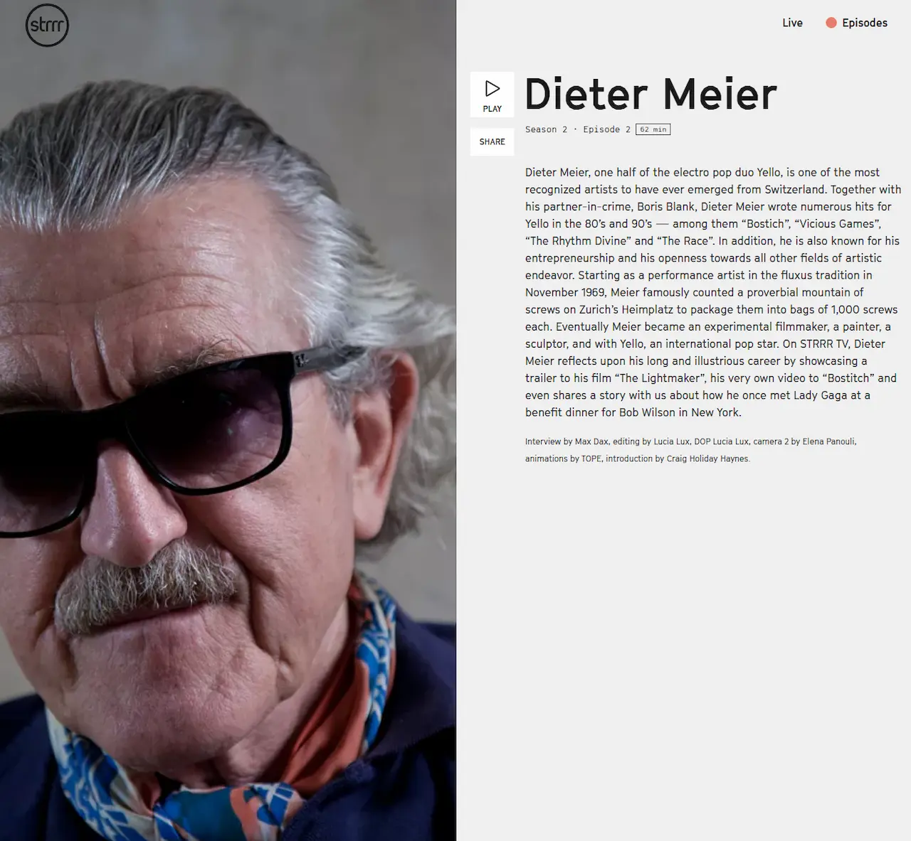A cozy, yearly and very fun music festival located in my homearea Thy, Denmark. Forever growing since its beginnings in 2009. I left it in good hands in 2014. Now it's 2023 and it's still going!
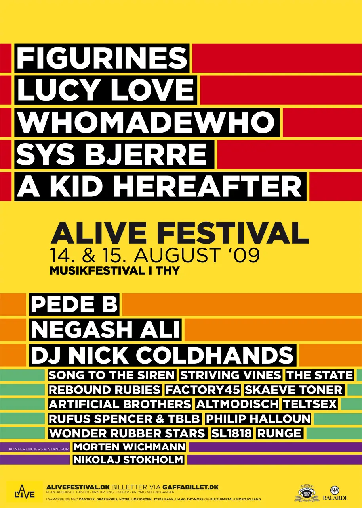 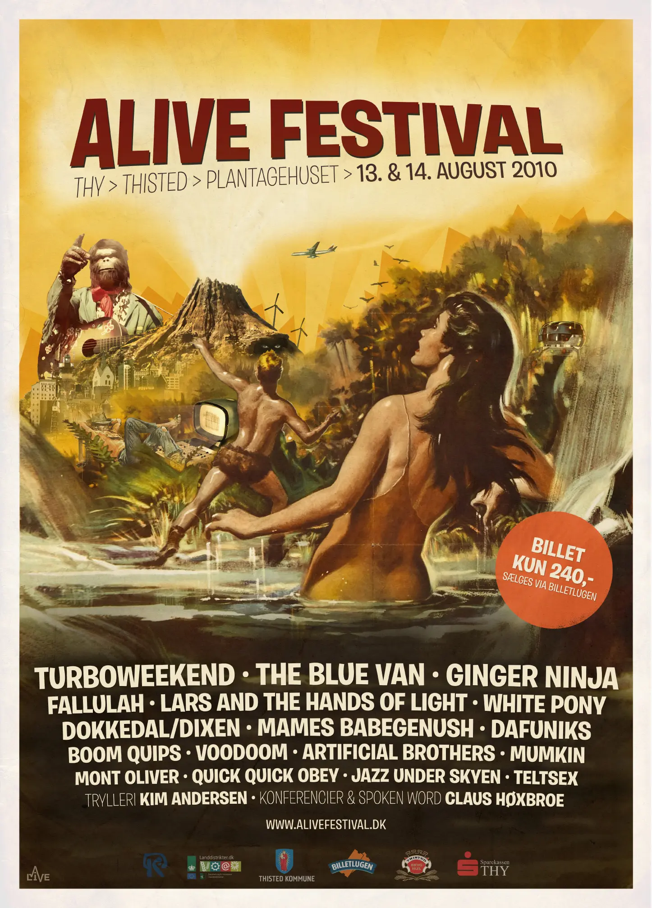 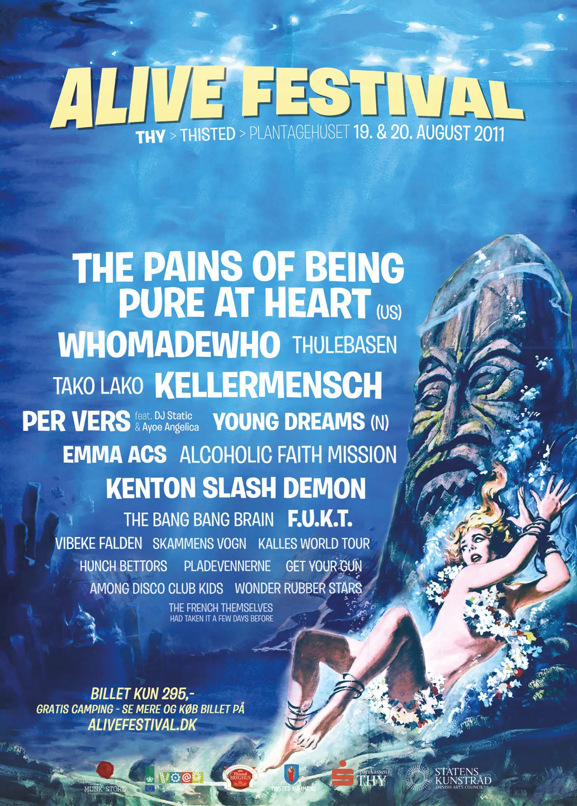 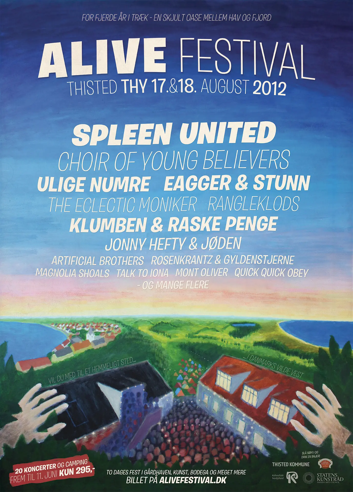 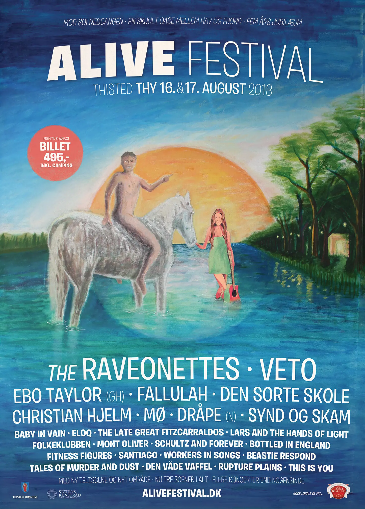A collection of prototypes of games I made. The source code is on my Git.
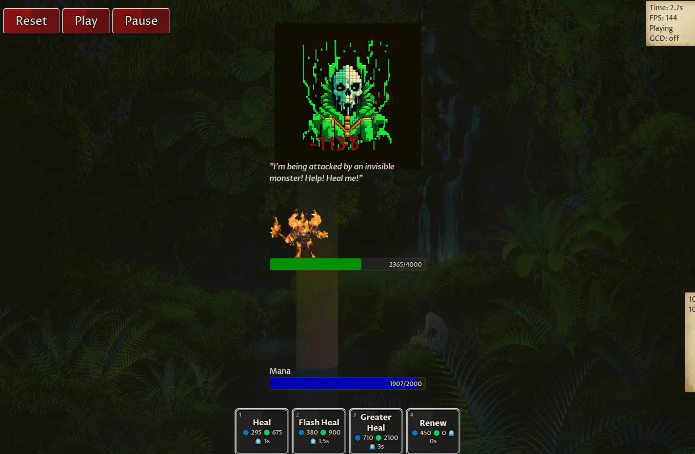A guide for anyone wanting to learn more about web development. A no-longer work-in-progress collection of my personal codes and notes.
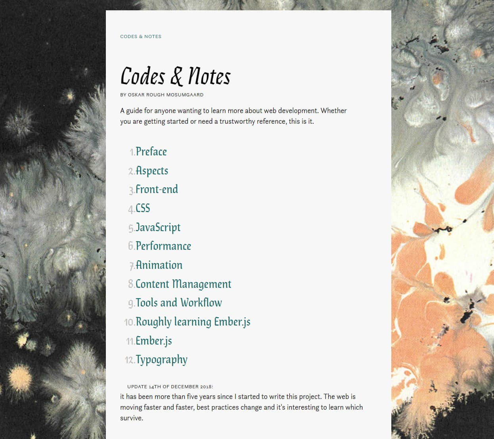In 2019 I joined Unicorn as CTO and have been trying to make workplaces across Germany a bit nicer since then.
I maintain several community projects such as media-now, Radio4000, ember-youtube, ember-date-fns and ember-wordpress and the rough boilerplate. The source for Codes & Notes is also available.
From 2010 to 2016 I worked with HOPE/GLORY and Kopfwelt in a space alongside Metrofarm and Noshe. Some sites we did:
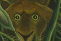
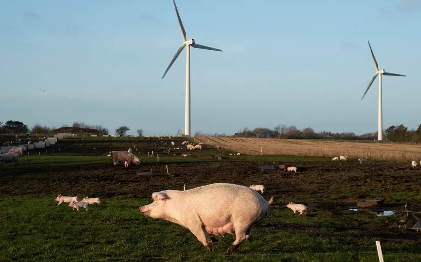